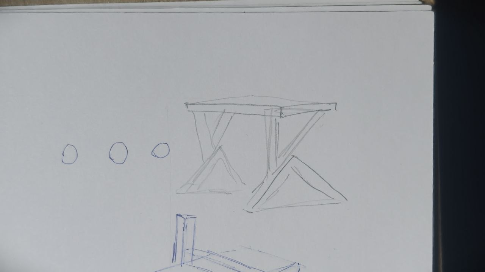
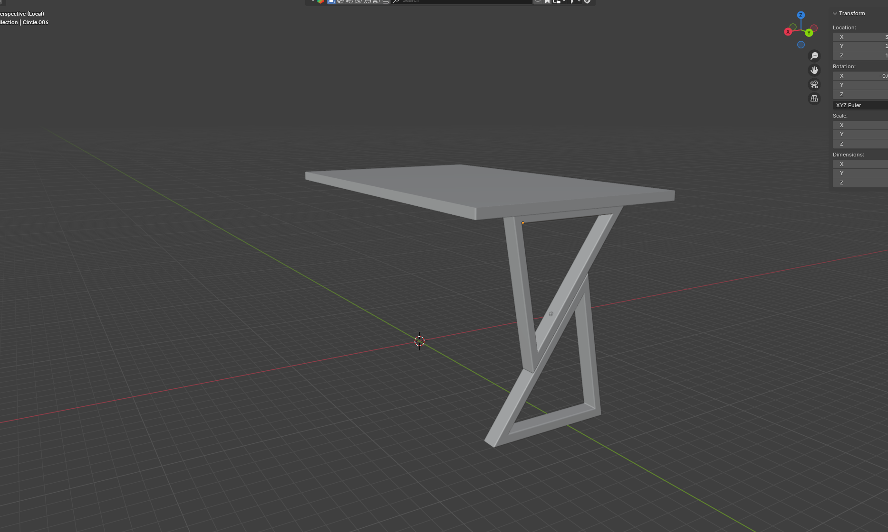

Стол LOFT K#1
Модель стола была создана на основе реального объекта. Важно было сохранить узнаваемую конструкцию: деревянную столешницу, черные металлические опоры и лаконичную геометрию без лишних деталей.


Моделирование
Сначала я собрал high poly модель, чтобы точно передать пропорции и форму ножек. Основное внимание ушло на чистую геометрию, устойчивый силуэт и правильную посадку столешницы.
Материалы и текстуры
Главный акцент — деревянная поверхность. Я настроил текстуру так, чтобы рисунок дерева не выглядел плоским, а металлические опоры сохраняли сдержанный промышленный характер.